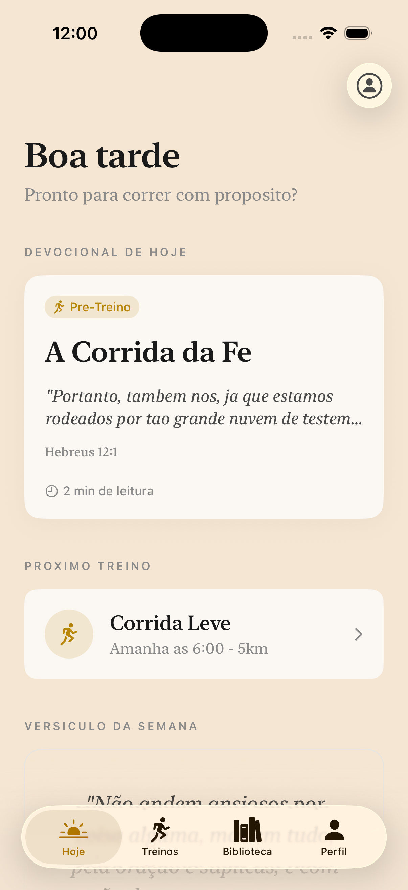
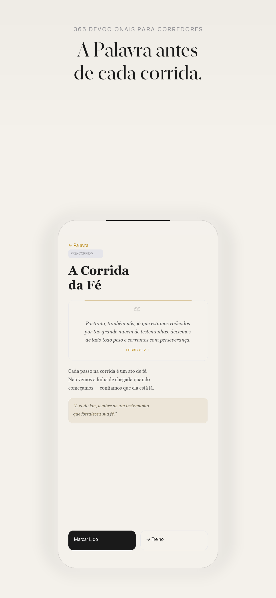
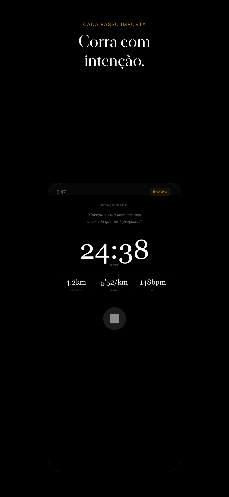
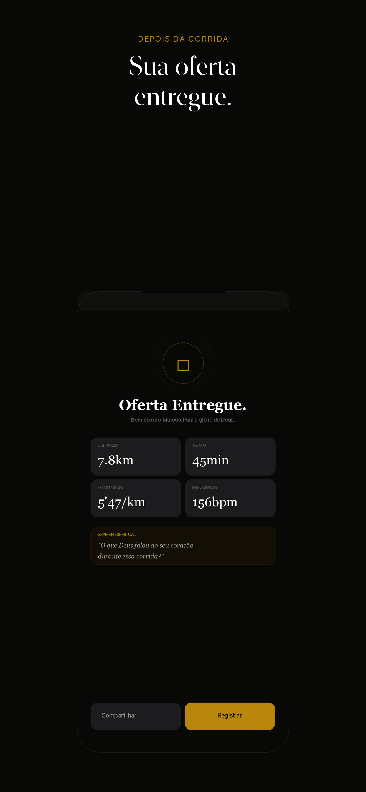

App de corrida para quem corre por um propósito maior
Devotion.Run une devocional cristão e treino. Leia a Palavra, corra com intenção e receba versículos a cada quilômetro — tudo em um único app.

Correr é mais do que quilômetros. É disciplina, oração e entrega. Devotion.Run nasceu para quem quer transformar cada treino em um ato de fé — sem precisar abrir dois apps ao mesmo tempo.
Comece com o devocional do dia. Uma reflexão curta, escrita para corredores, com um versículo para carregar durante o treino.

Defina sua intenção de oração, aperte o play e corra. A cada quilômetro, o app entrega um versículo para te sustentar.

No final, registre o que Deus falou ao seu coração. O resumo da corrida vira uma oferta de gratidão — e pode ser compartilhado.

Um conteúdo novo por dia, escrito para o momento da corrida. Nunca repete. Sempre relevante.
A cada quilômetro percorrido, uma palavra da Escritura. A Palavra vira companheira de corrida.
Rastreamento de distância, ritmo, tempo e rota. Sem simulações. Dados que você pode confiar.
Sincronize automaticamente seus treinos com o Apple Health e acompanhe no pulso com o Apple Watch.
Registre o que Deus falou durante a corrida. Suas reflexões ficam salvas e sincronizadas.
Baixe devocionais e treine sem internet. A Palavra e seus dados vão com você para qualquer lugar.
Publique automaticamente seus treinos no Strava, com distância, ritmo, tempo e a reflexão que você escolher compartilhar. Seus dados, suas regras.
Baixe o Devotion.Run na App Store. Em breve também no Apple Watch.
Disponível na App StoreLançamento em breve. Entre na lista de espera para acesso antecipado.